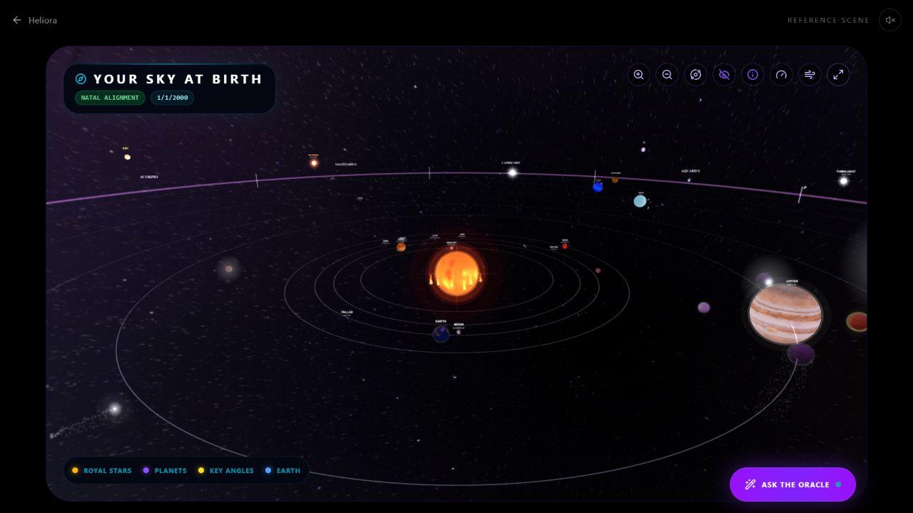
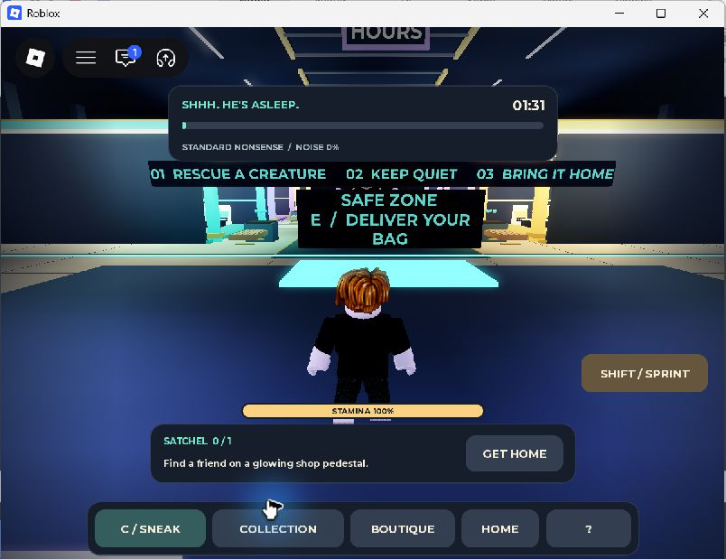

Working reference demoHeliora Studio
React · TypeScript · Three.js
Interactive celestial geometry, local city search and a free static deployment. Reference mode, chart calculation and pricing presentation checked; signed-in paid services remain a separate verification task.
Explore reference scene ↗Working demo · 3 submissionsScopeKit
HTML · CSS · JavaScript
Editable deliverables, acceptance checks, Markdown export and JSON backup/restore. Submitted to LaunchPad, GenHacks and Arbiter; no award claimed.
Try the planner ↗Fictional website conceptDaylight Café
HTML · CSS · JavaScript
Responsive café website with original SVG illustrations and working menu filters. A personal demonstration with recorded desktop and mobile checks.
View case study ↗Public source · Devpost submissionBio Galaxy
React · TypeScript · Three.js
A biology exploration interface connecting scientific subjects through interactive visualization. No clinical accuracy or measured learning outcome is claimed.
View Devpost project ↗Source and tests availableCSV Audit
Python · CSV · JSON
Flags missing fields, exact duplicate records, duplicate keys and malformed rows without changing the input. Handles quoted and multiline CSV values.
Read source and tests ↗Public-source prototypeRiceLayer
Browser extension · CSS
A CSS-only website theming extension with sanitization and rollback paths. A prototype rather than an extension-store release.
Browse the repository ↗
Published alphaODDHOUR: Don’t Wake the Mall
Roblox · Luau · Python
A creature-rescue loop with a collection, server-side progression and persistence checks. The image is an actual gameplay capture. Player retention and commercial success are unproven.
Open Roblox experience ↗Local update · release checks pendingSteal a Cryptid
Roblox · Luau · Blender
Creature collection, moonlit dens and echo raids. The Moonlight update includes rebuilt models and UI; local validation is distinct from a completed public release.
Development notes · Source remains private
Live Reddit playtestSubstrate
Devvit Web · Phaser · TypeScript
A daily distance-deduction game with four probes, a candidate guide, saved progress and a shareable result. Uploaded to Devvit and tested in a public Reddit community.
Play on Reddit ↗Private-source prototypeMath Atlas
Mathematical visualization
Explores mathematical concepts through browser-based visual interfaces. Project overview available in the private development repository.
Development notes · Source remains private
Private-source prototypeSoma
Anatomy · Molecular visualization
Schematic anatomy and molecular exploration for teaching concepts. It is not a clinical digital twin.
Development notes · Source remains private
Private-source prototypeAlchemia
Browser learning game
A chemistry learning game prototype. Educational effectiveness has not been measured.
Development notes · Source remains private
Development projectAutoretto
Media operations · Web application
Media release and channel-workflow tooling. Hosting and external integrations require operational verification before a live demonstration.
Development notes · Source remains private
Private development projectAcademic OS
Structured state · Validation
Academic workflow and validation experiments. Student records and course material are excluded from this portfolio.
Development notes · Source remains private
Commerce implementationVELLAVI
Next.js · Supabase · Stripe
A storefront implementation with database and payment integration code. Implementation presence is not a claim of completed commercial operations.
Development notes · Source remains private
Commerce implementationSoft Circuit
Next.js
A separate commerce interface project. Launch, fulfillment and payment checks remain distinct from the code demonstration.
Development notes · Source remains private
Related starter projectHELO
AI Studio · Celestial interface
An exploratory starter with dependencies overlapping the celestial application work. Listed for completeness rather than as a separate flagship.
Development notes · Source remains private
Research prototypeCASMI 2026
Python · NumPy · pandas · PyArrow
A spectral-library retrieval baseline. Evaluation and verified competition submission remain pending; no rank or benchmark is asserted.
Development notes · Source remains private
Notebook needs repairTitanic ML
Python · Tabular machine learning
A private Kaggle learning notebook with an unresolved data-loading failure. No evaluated model score is claimed.
Development notes · Source remains private
Published product catalogueSourceStore asset packages
Blender · Procedural models · Synthetic audio
Original creature and character assets plus synthetic audio packs. Product documentation and purchase terms are available in the store.
View asset catalogue ↗Last reviewed 14 November 2026. Private source and personal data are not published. Links and descriptions distinguish a prototype, a submission and a verified result.